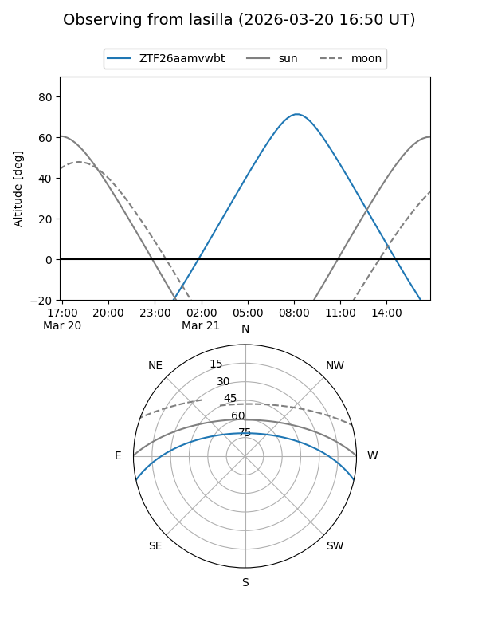
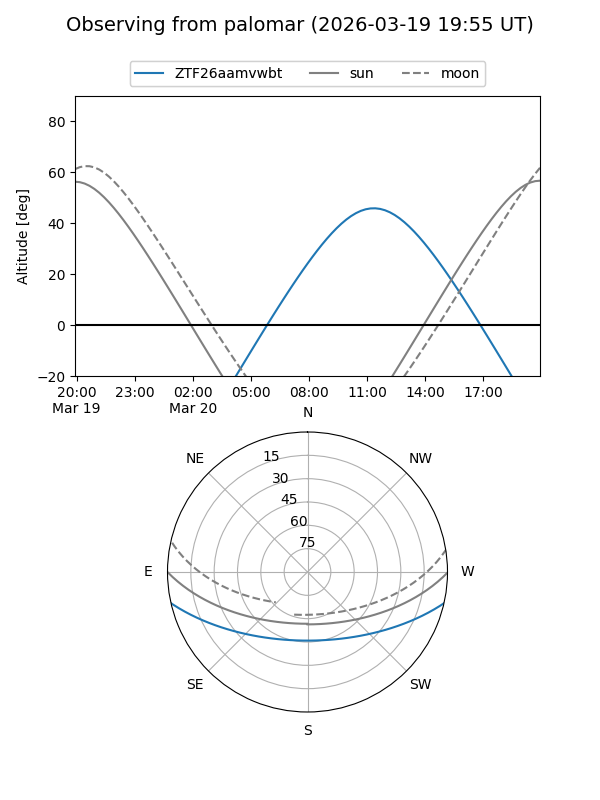

ZTF26aamvwbt
Target ZTF26aamvwbt at 2026-03-20 15:19
Aliases and brokers:
FINK: link
Lasair: link
ALeRCE: link
alt names
ZTF26aamvwbt (ztf,fink_ztf)
Coordinates:
equatorial (ra, dec) = 230.8798,-10.65148
equatorial (HMS+DMS) = 15:23:31.15,-10:39:05.32
galactic (l, b) = (352.4028,+37.21185)
Flags:
Photometry:
last ztfg=19.98
1 ztfg detections
Lightcurve
Visibility


Additional plots